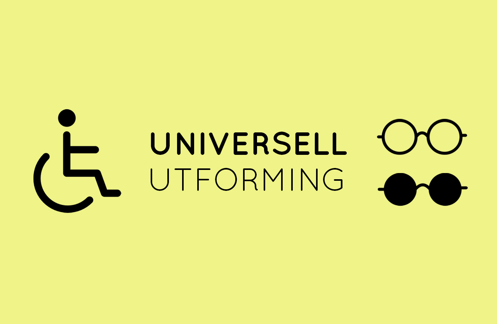

UU vs SEO
Hva er UU?
UU eller universell utforming handler om å gjøre nettsiden tilgengjelig for alle brukere. Det betyr at alle brukere skal kunne forstå og betjene siden. I Norge er det også lovpålagt at visse krav til siden skal være oppfylt. I privat sektor skal nettsider oppnå en minimumsscore på 35 i WCAG 2.0. WCAG er en av de bedre og enkleste verktøyene for utviklere å forholde seg til, og blir ofte sett på som en benchmark for hvor tilgjegngilig en side er. I offentlig sektor stilles det mye av de samma krava, men der privat sektor må forholde seg til WCAG 2.0, må offentlig sektor forholde seg til WCAG 2.1, som stiller ytterligere 12 krav. Hovedforskjellen mellom WCAG 2.0 og WCAG 2.1 er at WCAG 2.1 stiller flere krav. Ettersom at WCAG 2.0 ble utgitt i 2008, har den noen manglende krav spesiellt rettet mot mobilbrukere. Dette er noe som er blitt bedre i WCAG 2.1. I tillegg kommer WCAG 2.1 også med flere krav som skal gjøre det enklere for folk med ulike funksjonshemninger å betjene nettsidene.
Hva er SEO?
SEO (Search engine optimization) handler om å utfrome nettsiden slik at den vil havne
høyt opp i søkeresultatene. For å oppnå dette er det viktig å tilpasse siden etter
google sine retningslinjer for hva de ønsker å se av meta-innhold. Det kan være bruk av
tagger, rettskriving, anbefalinger, bouncerate osv. I tillegg er det også viktig å ha en
forståelse for hvilke søkeord som blir brukt. Hvis man ikke bruker riktige eller
relevante søkeord på nettsiden sin, kan det resultere i at siden for lite eller feil
trafikk.
For å indeksere nettsider bruker google programmer som krabber seg igjennom nettsider og
beveger seg fra link til link. Siden det finnes milliarder av nettsider, betyr det at
disse krabberne ikke har mye tid til å indeksere hver side. Derfor er det veldig viktig
at siden er lett å lese.